Sun: bitmap, polygon, insets, brush, SVG, raster
Source is sun.png from zalivka.space1. The insets exist because that bitmap is one yellow.
1. Bitmap
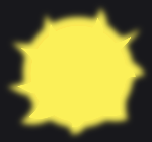
300×280. 37,311 solid pixels. Almost all of them are (240, 240, 80).
A pixel counts as solid when alpha is above 200. The next step never sees the soft glow: those pixels are below that cut.
2. Polygon
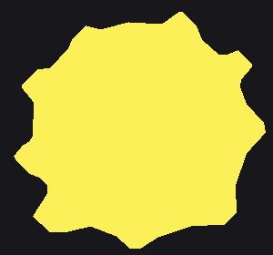
One region, colour #FBF058, 47 corners. First corner (25.2, 159.2), then (15.5, 171.0), (18.2, 176.8).
White (every channel at least 240) and black (every channel at most 24, plus a 1 px fringe) are dropped. A pixel stays if it is gray, saturation under 24 and peak at least 70, or any colour with peak at least 110. The two yellows here, (240, 240, 80) and (240, 224, 80), differ by 16. Centres are rounded to multiples of 16 and merged when the largest channel gap is 36 or less, so they become one centre. Each solid pixel is given to the nearest centre by the sum of channel differences.
That colour then grows, 4-connected, up to 16 steps, into any pixel with alpha above 32. A blob under 40 pixels is ignored, and a blob needs at least 20 solid pixels before it is a shape. The colour written down is the median of those solid pixels, which is why the yellow is #FBF058 and not the rounded centre.
The outline walks pixel corners with the interior on the left. At a junction it takes the sharpest left turn. A loop shorter than 4 corners, or a polygon under area 30, is dropped. A representative point has to land inside the mask, which throws away a hole. The kept loop is grown by 2.5 px with round corners (4 segments per quarter circle), then Douglas–Peucker at tolerance 1.8 with topology kept. That 1.8 is what turns the pixel stairs into the 47 corners.
3. Insets
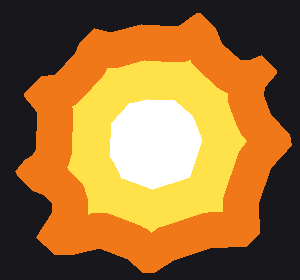
The edge stays #F07818. buffer(−36) is the yellow body #FFE24A. buffer(−74) is the white center #FFFFFF.
Negative buffer moves every edge inward by that many pixels. Round joins turn a corner into an arc. These colours are assigned. They are not a second trace. The yellow body has area 22,547. The white disk has area 6,429.
4. Polygon to brush
The orange ring only. Yellow and white take the same steps. Short side is 251, long side is 276, so this is a closed outline at brush 14, not one limb stroke.
The test uses the minimum-area rectangle around the polygon. A limb is a short side under 42 and a long side more than 2.2 times the short side: one stroke down the long axis, width clamped to 14…48, each end inset by half that width. Anything else with at least 4 corners is a closed outline. Brush width is 14 when the short side is at least 42, otherwise max(6, short side × 0.4).
Corners, shifted by 40 px
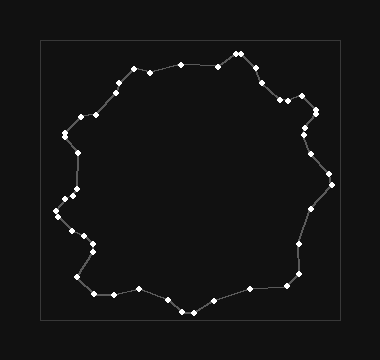
47 corners. The gray box is the original 300×280 bitmap. The first corner (25.2, 159.2) is now (65.2, 199.2).
Each side becomes its own straight motion, with a point about every 2 px. Splitting at the corners is what makes the finger slow down and turn there. A limb would use a Catmull–Rom curve through two end points instead of this.
Run past the start
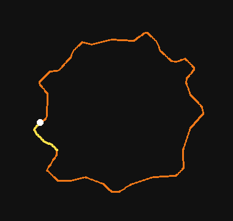
The finger draws the loop, then keeps going. The yellow tail is 68 px, 7.3% of the perimeter. The white dot is the start.
A closed stroke adds a random 4–14% of the perimeter past the start, walked along the same loop. The extra length is what keeps a fill from leaking through the join. This run rolled 7.3%.
Wobble
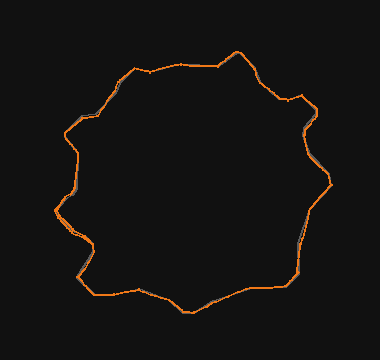
Gray is the polygon. Orange is the finger path after three sideways waves. Scale is 2. The orange line sits at most 2.8 px off the polygon, 1.0 px on average.
Three sines, added along the path and pushed sideways, perpendicular to the local tangent. Each wave has amplitude 0.3–0.7 times the scale, wavelength 60–240 px, and a random phase. The scale is jitter × min(4, 1.2 + extent / 90). Jitter is 0.5. This ring is 276 px across, so 1.2 + 276 / 90 exceeds 4 and the scale caps at 0.5 × 4 = 2.
One scallop, four times
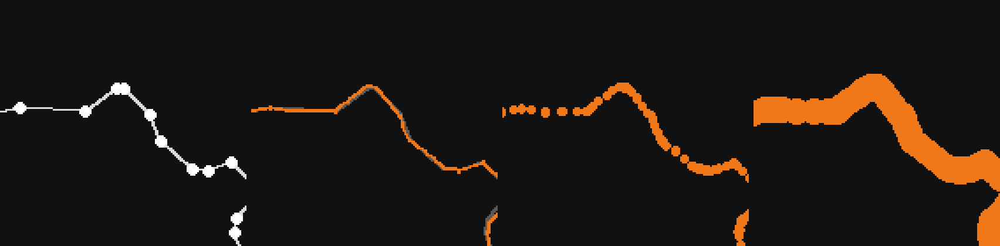
Left to right: the corners, the wobble against the polygon, the 60 Hz samples, the 14 px stroke.
60 Hz samples
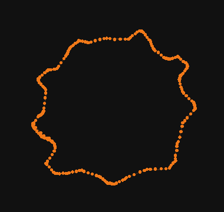
246 samples, 243 kept. The first 12 px of motion after touch-down are dropped. The first kept point is (64.6, 198.7).
Speed is a random 500–900 px/s, times a size factor clamped between 0.75 and 1.1. A turn slows the finger: over about 10 px either side, the pace is (radius / 120) to the power 1/3, clamped to 0.55–1.15. Time along a piece mixes constant speed with a minimum-jerk curve, 60% constant and 40% jerk. Samples are taken at 60 Hz, then each one is kicked by gaussian noise of 0.25 px. The stroke keeps its start point and drops samples until the finger has moved 12 px, which is why 246 samples become 243 points.
14 px stroke and the fill tap
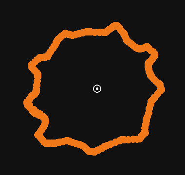
Each sample is a round stamp of radius 7. The tap is (199.1, 183.0), inside the polygon inset by 11 px, then nudged by up to 3 px. It lands 0.4 s after the outline.
The tap point is the representative point of the polygon inset by half the brush plus 4, here 11 px. It is then moved by a random ±3 px on each axis. A fill that follows a stroke of the same colour waits 0.3–0.7 s. A new colour adds another 1–2 s, which is why the yellow stroke starts at 9.6 s.
Flat fill under the stroke
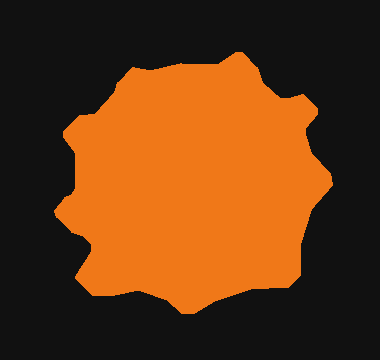
The polygon, grown by 1.5 px. This is a flat SVG path, not a finger stroke.
Positive buffer by 1.5 px, round joins. The path is inserted as the first child of the SVG, so it paints under every stroke. It is not a hand operation and it does not wobble.
Fill, then the stroke on top
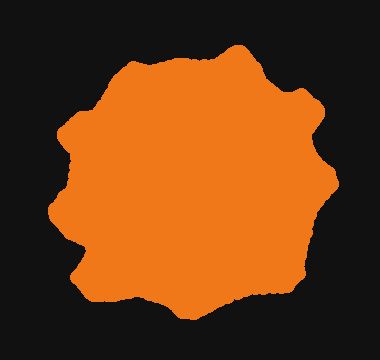
Same colour. The ragged edge is the 14 px stroke walking off the flat fill.
All three rings
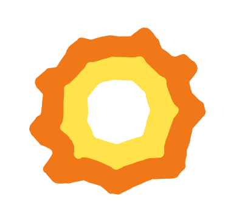
Largest first: orange stroke, orange fill, yellow stroke, yellow fill, white stroke, white fill. Yellow is 453 points. White is 103. The white disk paints over the yellow, and the yellow over the orange.
5. SVG
The same stroke, with the time column dropped.
Each stroke operation becomes a polyline: fill none, stroke-width 14, round caps, round joins. A fill operation becomes a filled path. Coordinates are written to one decimal. The SVG width and height are then multiplied by 4. The viewBox stays the unscaled canvas, 380×360, so one unit is still one brush pixel and the raster is what enlarges it.
<polyline points="64.6,198.7 55.8,209.3 55.5,210.7 55.2,212.2 56.1,213.5 …" />
6. Raster
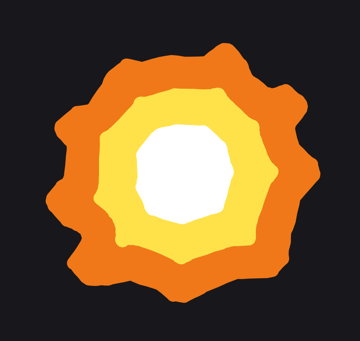
rsvg-convert at 4× makes sun_0.png, 1520×1440. That PNG is what the .ati stores. The shape is the SVG from step 5.
librsvg rasterizes the polylines and the flat fills. 380×360 times 4 is 1520×1440. The joint is the source joint plus the 40 px pad, times 4, and the offsets stored in the item are the negation of that point. The bitmap is not cropped, so a later boil frame cannot shift the joint.